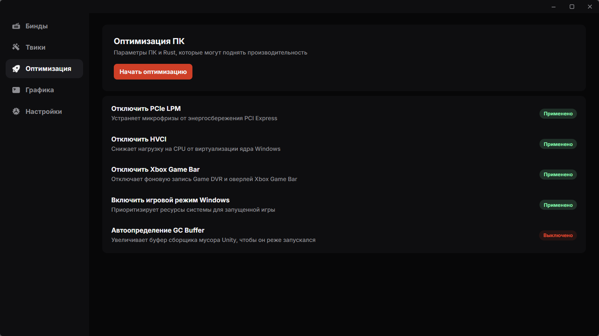

Оптимизация Rust
Как повысить FPS
в Rust
FPS упирается не только в настройки графики. Часть просадок и микрофризов создаёт фоновая нагрузка Windows. Начни с неё — затем переходи к параметрам игры.
Скачать RustTemper
С чего начать оптимизацию
Не существует одной настройки, которая гарантированно даст прирост на любом ПК. Но отключение лишних фоновых функций и правильная настройка игры часто помогают сделать время кадра стабильнее — это заметнее среднего FPS.
Убери микрофризы от энергосбережения PCIe
Отключи PCIe LPM, если во время игры появляются короткие подлагивания. Эта функция экономит энергию, но при нагрузке может добавлять задержки при выходе устройства из сна.
Отключи фоновую запись Xbox Game Bar
Если ты не используешь запись клипов и оверлей Xbox Game Bar, отключи их. Это убирает лишний фоновый процесс и освобождает ресурсы во время матча.
Включи игровой режим Windows
Игровой режим помогает Windows отдавать приоритет запущенной игре. Это не заменит настройку графики, но уменьшит влияние фоновых обновлений и задач.
Настрой GC Buffer для Rust
GC Buffer определяет объём памяти, который Unity использует перед сборкой мусора. Подходящее значение помогает снизить частоту заметных фризов; его стоит подбирать с учётом объёма оперативной памяти.
Без ручного редактирования конфигов
Настрой Rust за несколько минут
RustTemper объединяет системную оптимизацию, графику, бинды и игровые твики в одном приложении для Windows.